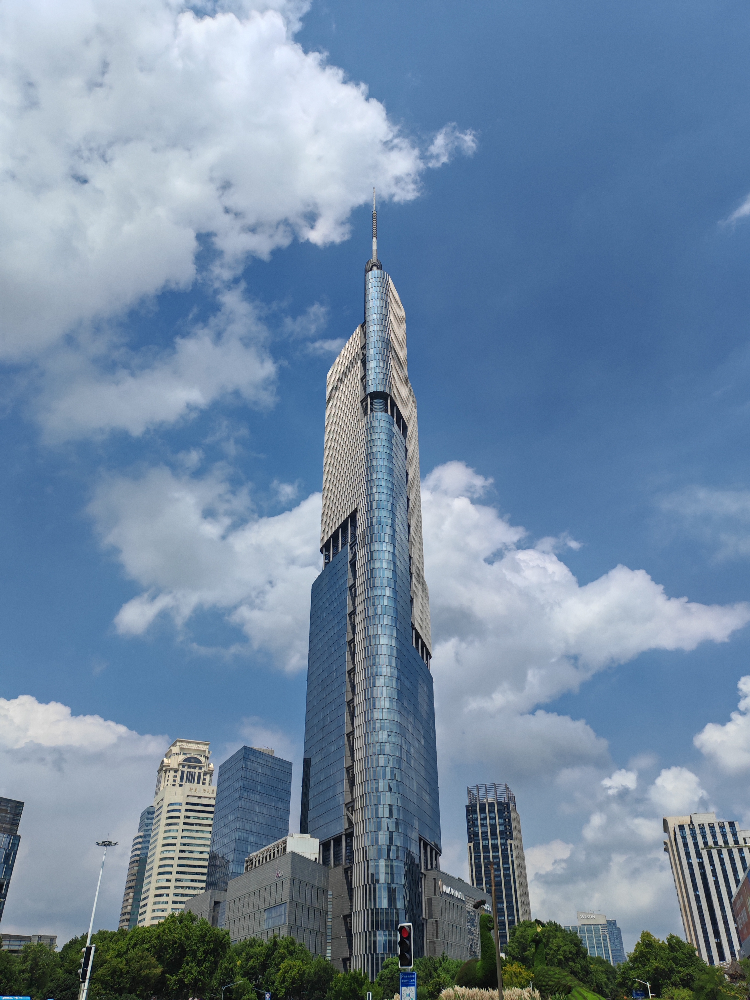
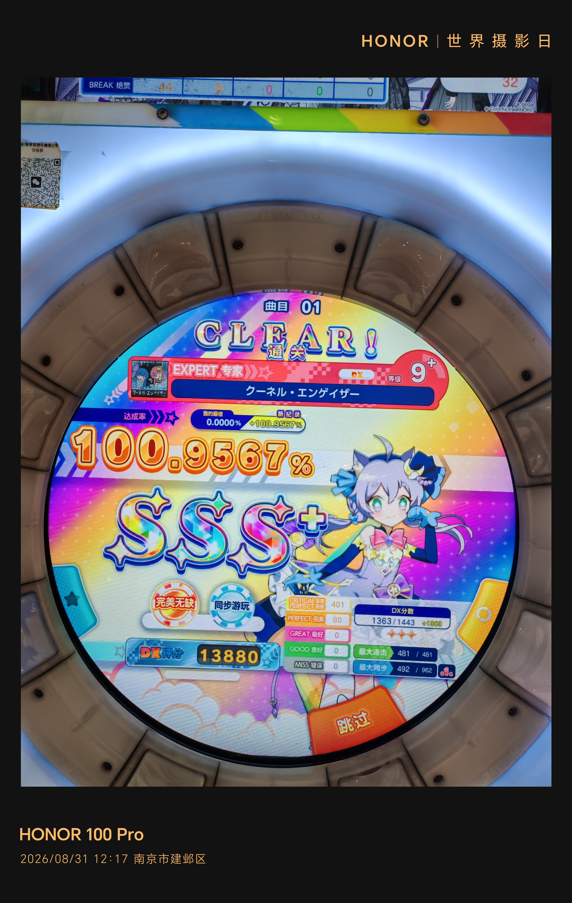

HX-WRDZGZS / PERSONAL SITE
这里放软件、基础设施、业余无线电，以及 Amia · Mizuki 相关项目。代码和版本记录仍以 GitHub 为主。
面向业余无线电中继点名现场的 Windows 工具，现已迁移到 C#，继续完善工信部电台数据、历史记录、Excel 导出和原生通知。
公告记录显示：所有服务器集群已重新开放；除 Amia ALL SRV 外，其余主要服务均已恢复运行，Amia ALL SRV 于当晚起陆续恢复。
现场录入、电台数据、历史建议、Excel 导出与原生通知。
舞萌 DX Android 客户端，持续调整玩家信息、成绩与曲库界面。
从 Windows 采集硬件状态，经 Home Assistant 送往桌面终端。
部分服务器集群已开始运行 HongXingOS 7，用生产环境继续验证稳定性与兼容性。
PVE、Linux、Cloudflare、DNS、Tunnel、数据库与自动化脚本。
NoneBot2、PJSK、舞萌相关插件、身份验证和公共组件。
QSO / QSL、中继点名、台站软件与相关工具。

